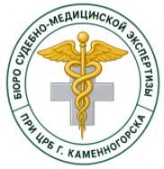
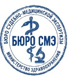

Эксперт:
Литвинова Алла Сергеевна, врач — судебно‑медицинский эксперт Бюро судебно‑медицинской экспертизы при ЦРБ г. Каменногорска.
Основание:
постановление следователя от 30 июня 2024 года о проведении повторной экспертизы по уголовному делу № ПП-2024-0624.
Исследование проведено:
2 июля 2024 года с 09:20 до 15:50 в секционном зале № 2 морга ЦРБ г. Каменногорска.
| Фамилия, имя, отчество | Белова Кира Валерьевна |
| Год рождения | 14 марта 2005 года (19 лет) |
| Место обнаружения тела | берег озера Черничного, у подножия обрыва возле тропы на перевал «Седой Хребет» |
| Дата и время доставки в морг | 25 июня 2024 года, около 06:40 |
| Кем опознана | Беловым В. С. (отцом) |
На шее заметна слабо различимая странгуляционная борозда. Её узор чётко повторяет рельеф плетёной туристической верёвки. В мягких тканях шеи, особенно в районе сосудисто‑нервных пучков, видны небольшие кровоизлияния.
На лице, плече и пояснице — ссадины и кровоподтёки. Судя по их виду и расположению, они могли появиться от удара о камни при падении тела с высоты.
| Дата и время наступления смерти | 24 июня 2024 года, около 23:00 (погрешность ± 30–40 минут) |
| Непосредственная причина смерти | механическая асфиксия от удушения верёвкой |
| Род смерти | насильственный |
